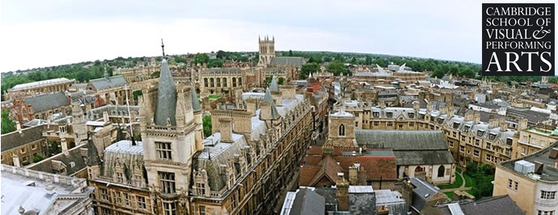

Acasă
Acasă Țări
Țări Catalog
Catalog Galerie foto
Galerie foto Experiente
Experiente Despre
DespreCambridge School of Visual & Performing Arts



Descriere
Din 1985 Cambridge School of Visual and Performing Arts este unul dintre specialisti intre scolile de pregatire pentru domeniile artistice Arta si Design, Teatru si Muzica. In timp oferta lor educationala a ajuns sa includa si programe complete de licenta sau pre-master atat pentru studentii britanici cat si pentru cei internationali. In ultimii 25 de ani aceasta universitate a oferit studentilor sai cadrul ideal pentru dezvoltarea abilitatilor, cresterea increderii in sine si succesul aplicatiilor catre cele mai renumite universitati de Arta si Design, Conservatoare si Academiile de Teatru din Marea Britanie. Programele CSVPA includ parteneriate cu University of the Arts London, Kingston University si cea mai faimoasa scoala britanica de teatru – Royal Academy of Dramatic Art. Deschiderea catre invatarea creativa si relatia personalizata cu profesorii garanteaza stimularea la maximum a potentialului individual. CSVPA ia in considerare fiecare student in mod individual, grupele de studiu sunt mai mici decat in multe dintre alte universitati, iar tutorele personal este disponibil in fiecare zi. Studentii sunt incurajati sa petreaca cat mai mult timp in salile colegiului indiferent de ora, atat pentru studiu, dar si pentru a se bucura de mediul creativ si multicultural.
Informații generale
Tara: Marea Britanie
Limba de predare: engleza
Ani de studiu:
Bachelor: 3
Inceput an: octombrie, ianuari
Burse: Da
Campusuri: Cambridge
Aeroporturi: Londra
Cazare: Taxe pentru 2018/2019: 4635-6600£ /semestr
Programe de studiu:
Art & Design Pre-Foundation and Foundation Programmes (recunoscut de la University of the Arts London)
BA Fashion Design (recunoscut de Kingston University)
BA Graphic Design and Illustration (recunoscut de Kingston University)
Art & Design Pre-Master's
BA TopUp programme (Fashion and Graphic Design)